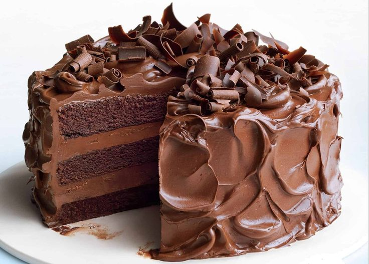

Bolo de Chocolate
Ingredientes
- 2 xícaras de farinha de trigo
- 1 xícara de chocolate em pó
- 1 xícara de açúcar
- 3 ovos
- 1 xícara de leite
- 1 colher de sopa de fermento em pó
Modo de Preparo
Preaqueça o forno a 180°C. Em uma tigela, misture os ingredientes secos. Adicione os ovos e o leite, e bata até formar uma massa homogênea. Acrescente o fermento por último e misture suavemente. Coloque a massa em uma forma untada e leve ao forno por cerca de 40 minutos.